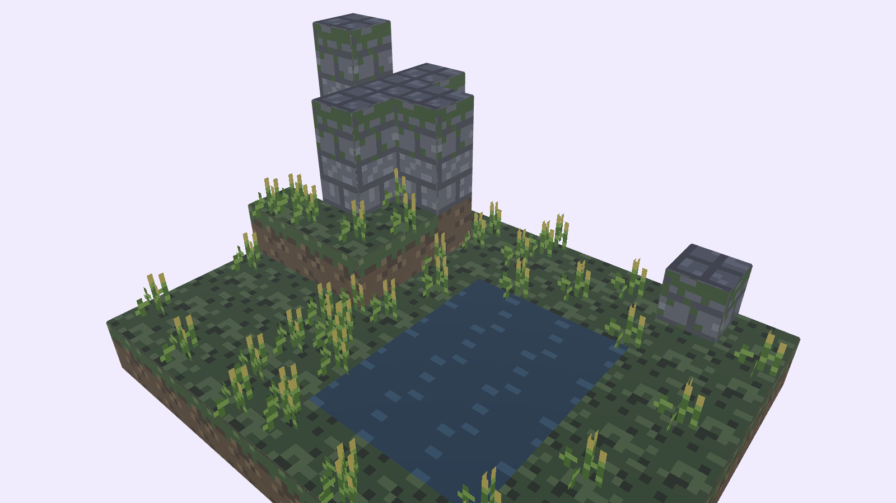
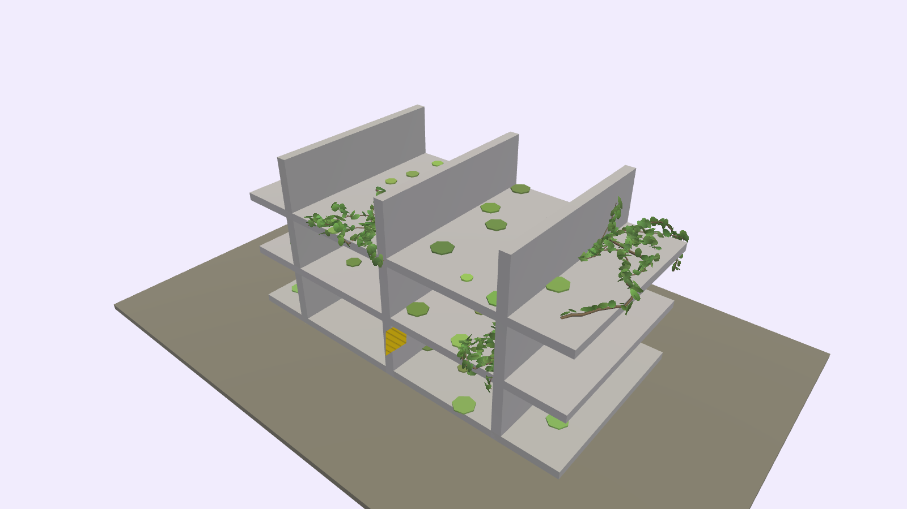

For a while now I have been redesigning OctoShaper from the ground up. Today you can try the result: OctoShaper Studio runs in your browser, for free, with nothing to install and no account. It is an early, experimental version, and I am opening it up now because I would love to know what you make with it and what gets in your way.

A graph that is also code. Every document is a short text file in OctoLang, OctoShaper's new language. The studio shows it three ways at once: as a node graph, as code and in 3D. Change a slider, a wire or a line of code and the other views follow. Because a model is plain text, it is easy to read, to compare and to version, and AI agents can write it too.
Procedural, then by hand. Start from boxes and outlines, repeat and scatter them, split, bend, chip and wear them, and let ivy and moss grow over the result. Then click any single shape in the 3D view to move it, turn it or recolour it, stamp cells into place, or paint straight onto a texture. Your hand edits stay in the file next to the procedural ones.

Yours to export. Export glTF (.glb or .gltf) for Unity, Godot, Blender or the web, or a picture. What you export is yours to use for anything, commercially included. Your files never leave your computer.
What "experimental" means. Expect rough edges. Nodes, the studio and the file format will change between versions, so keep your .octo files and export again when a new version comes out. The studio tells you which version you are on, and Help › What's new lists every change. OctoShaper for Unity on the Asset Store is a separate product and carries on as it is.
Getting started. The studio opens on a sample village. File › Open sample has fifteen more, from a single box to a hand-painted diorama, and Help › OctoLang guide explains every node. It works best on a desktop or laptop, in a recent Chrome, Edge, Firefox or Safari.
Found a bug, or made something you like? Tell me on the community forum or at contact@curioustrove.com. This early, every message shapes what comes next.